NAVIGATION
TOP of Page
MAIN Page
HOME Page
PREV Page
NEXT Page
ON THIS PAGE
MAP
EDWARD RIVER
Blighty
Warragoon
Deniliquin
MURRAY RIVER
Moama
Echuca
Barmah
Barmah NP
MURRAY VALLEY NP
Mathoura
Murray Park
Picnic Point
Birdwatching
RIVERINA AREAS
Albury-Wodonga
Federation Council
Berrigan Shire
North-West
Campaspe Shire
Moira Shire
Shepparton G.C.
Benalla R.C.
Indigo Shire
Silos & Waterways
|
MAP
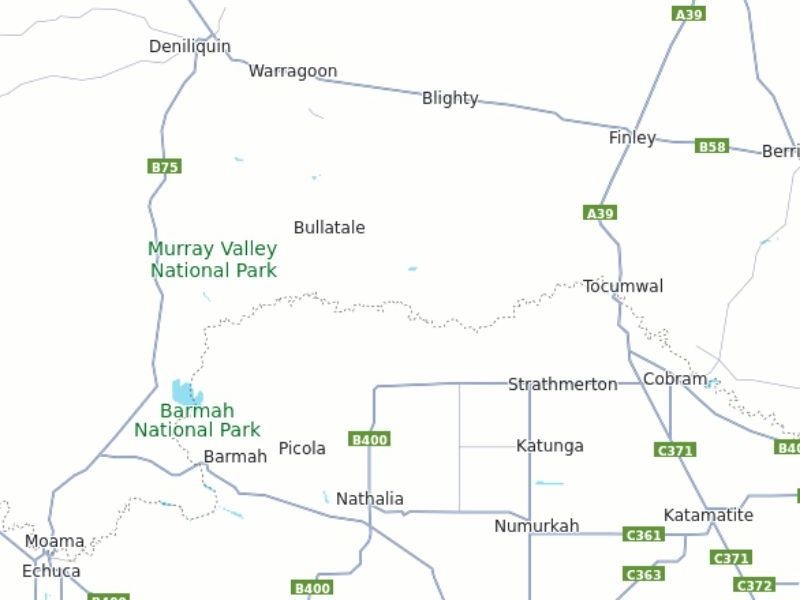
Map of the North West to the Murray Valley National Park
TOP
MAIN
HOME
PREV
NEXT
EDWARD RIVER COUNCIL
The region includes both dryland and irrigated areas. The dryland areas support grazing, in
particular beef cattle and wool growing, being home to many famous Merino studs while the
saltbush plains produce quality medium class wool. The irrigated areas produce a range of high-
yield crops. The largest rice mill in the southern hemisphere is in Deniliquin, producing large packs
and bulk rice for export markets. Sawmills in the area process timber harvested from the River red
gum forests lining the Edward and Murray floodplains.
Deniliquin is also the headquarters of Murray Irrigation Limited, an irrigator owned private
company and one of the largest privately owned irrigation supply companies in the world. Murray
Irrigation manages the operations of the Berriqan, Deniboota, Denimein and Wakool Irrigation
Areas in the Murray Valley. These areas produce 50% of Australia's rice crop, 20% of NSW milk
production, 75% of NSW processing tomatoes and 40% of NSW potatoes.
Blighty, NSW is in the Edward River Council LGA and has a population of 396. The land around is
mainly irrigated and used to produce rice and other grains. Blighty is also a major receival centre
for the Ricegrowers Co-Operative Limited with a number of sheds capable of storing 28,000 tonnes
(31,000 short tons) of grain.
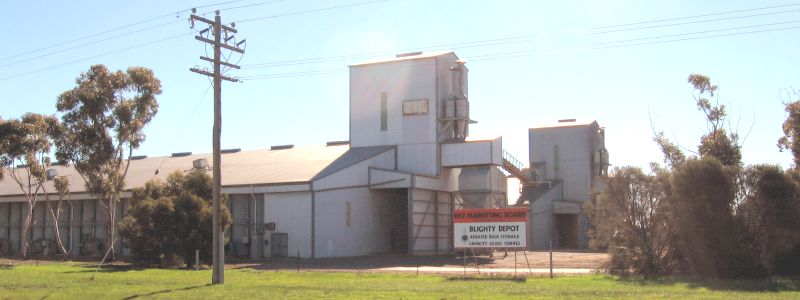
Blighty Grains Elevator on the Riverina Highway
(c) By I, Mattinbgn, CC BY-SA 3.0,
https://commons.wikimedia.org/w/index.php?curid=2249822
Link to Blighty
Warragoon, NSW has a population of 98, with the public school situated on the Riverina Highway.
To reach the restuarant, turn south at Mokangel Road (dirt) then turn east at the first intersection
onto McLaurins Road. Just before the next right angled corner is the 4.9 star cafe.
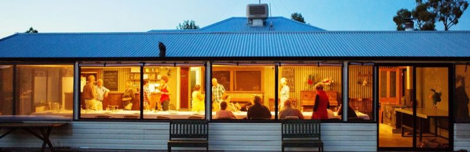
The Long Table Cafe at McLaurins Road, Warragoon
Link to Cafe
TOP
MAIN
HOME
PREV
NEXT
Deniliquin, NSW has an urban population of 6,833 with the including the surrounding rural area
having 7,862, making it the largest town in the Edward River Council local government area. It is
the service centre for the surrounding agricultural district, with a range of rice, wool and timber
industries. The town is divided in two parts by the Edward River, an anabranch of the Murray
River, with the main business district located on the south bank.
Just south of Deniliquin, the Edward River meanders into the spectacular Murray Valley National
Park. Deniliquin is the namesake of the deeply buried Deniliquin multiple-ring structure, suggested
to be at the core of a 320 mile diameter impact structure formed by a meteor strike over 400
million yrs ago, possibly responsible for the Late Ordovician mass extinction.
The Visitor Information Centre and Peppin Heritage Centre is at 295 George Street. The
Centre is housed in the Peppin Heritage Centre which was Deniliquin’s first public school and has
been transformed into a regional museum telling the story of the early pioneers who created the
famous Peppin Merino. In addition to its permanent exhibitions the Centre hosts a variety of
travelling and local exhibitions throughout the year.
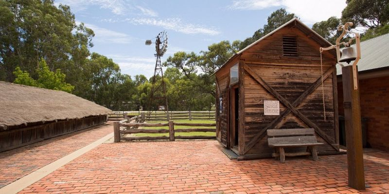
Peppin Heritage Centre at 295 George Street, Deniliquin
Link to Peppin
Link to Peppin
The Historic Town Walk starts at the Peppin Heritage Centre and takes you through 43
historically significant locations. The guide points out some of the original Deniliquin buildings
such as the Dublin Hotel, which was built in 1878, or the Federal Hotel which license dates back to
1876. You’ll also learn about the airport, cemetery, Lawson Siphon and so much more. Use the
digital version below or pick up a copy from the Visitor Information Centre in George Street.
Waring Gardens, Bandstand and Pavilion are at 355 Harrison Street. It is a heritage-listed park
was designed by John Waring, the first Town Clerk of Deniliquin, and built from 1880 to 1888 by
staff of the Deniliquin Council. It is also known as Cressy St Gardens, as defined by a low brick
wall. Important fixtures are still located in the gardens, such as the obelisk honouring John Waring,
a small pavilion, band rotunda, fountain, and the War Memorial Gates at the north west corner of
the gardens. Children's play equipment and modern seats have been introduced. The proclamation
plaque is located in the Gardens.
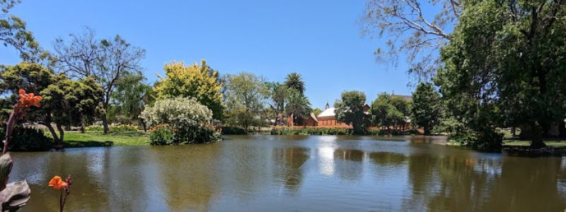
Waring Gardens at 355 Harrison Street, Deniliquin
Link to Deniliquin
Link to Deniliquin
The Deniliquin and District Historical Society Museum is at 3 Macauley Street. The museum
was previously the former police inspector’s residence built in the 1880’s. The main attractions
include items relating to the history of the Deniliquin Town Band, Picnic Races, Red Cross and
Shearing Equipment, etc. Also featured are a War Veterans display of memorabilia, a collection of
Police Records and an exhibit of Historical Costumes.
Lawson Syphons is on Finley Street. This remarkable engineering structure is located 5 km out of
town and diverts the canal under the river, delivering water to the agricultural areas west of
Deniliquin. It was constructed 700 metres long under the Edward River and adjacent billabongs.
The Lawson Syphons were completed and officially opened by NSW Premier John Cahill on April
27, 1955. Interpretive panels telling the story of these Syphons and how they were the catalyst for
an agricultural boom, have been installed on site.
The Depot Car Museum is at 158 Hardinge Street. The Depot has a unique collection of vehicles
and memorabilia that tell stories of life at home and on the road. With touches of Hollywood,
trucking and transport, Australian motoring, rescue vehicles and cars from all around the world,
The Depot is full of nostalgia and discovery.
Deni Ute Muster is one of Australia’s premier iconic two day rural events and holds the Guinness
World Record for the largest parade of utility vehicles. Held annually on the October long weekend,
head along to enjoy live music, ute competitions, rodeo and plenty for the kids.
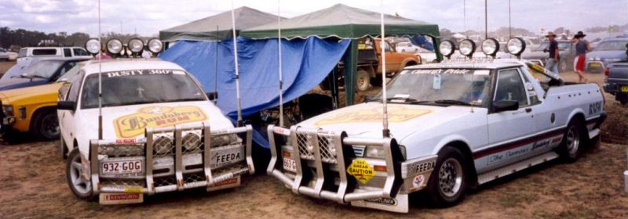
The Deni Ute Muster at Conargo Rd, Deniliquin
(c) By DavidMarsh - Own work, CC BY-SA 3.0,
https://commons.wikimedia.org/w/index.php?curid=901725
Link to Muster
TOP
MAIN
HOME
PREV
NEXT
MURRAY RIVER COUNCIL
Murray River Council was formed in 2016 from the merger of Murray Shire with Wakool Shire.
The combined area comprises 11,865 sq km and covers the northern bank of the Murray River and
hinterland from Moama downstream to Tooleybuc. At the time of its establishment, the population
of the area was 11,456. Other towns and localities in the area include Barham, Bunnaloo, Burraboi, Caldwell, Cunninyeuk, Koraleigh, Kyalite, Mathoura, Moulamein, Murray Downs, Speewa, Tantonan, Tooleybuc, Wakool and Womboota.
Moama, NSW Visit Old Moama and see Maiden’s Punt Reserve, the Old Telegraph Station and
River Captain’s Cottage. Also visit the Maiden’s Inn, where many big deals were once made. For a
time, the Maiden’s Inn was the busiest stock market in Australia.
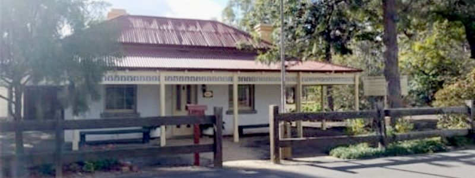
Moama Old Telegraph Station at 60 Chanter Street, Moama, NSW
(c) VisitNSW.com
Link to Moama
Mathoura, NSW on the Edward River has a population of 1002. It has a rich history with a main
shopping street, public artworks and a popular calendar of events. The area has excellent access to
the Murray River. It features good dry-weather roads and sprawling low river banks that feed out
across flat sheets of water.
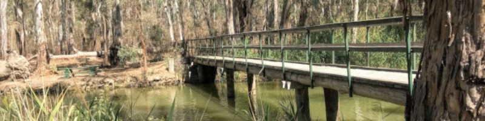
Burton Bridge Crossing Gulpa Creek at Mathoura
Link to Mathoura
TOP
MAIN
HOME
PREV
NEXT
MURRAY VALLEY NATIONAL PARK
Murray Valley National Park stretches more than 70,000 hectares and includes wetlands of
international significance. Explore the Nature Trails to explore the many forest walks and drives,
including through the Murray Valley National and Regional Parks and the Gulpa Creek Walk. On
the road to Picnic Point is an interesting 67 km dirt road turnoff to Tocumwal via Bulladale.
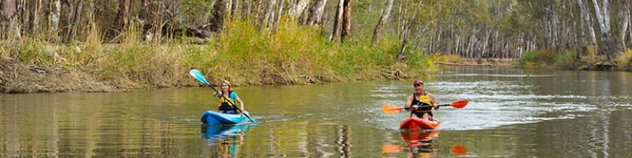
Murray Valley National Park
Link to Park
Picnic Point on the Murray There’s a fabulous little spot on a V-shaped bend, right where the
Edward River branches off from the Murray. Here you can learn about the history of the Timber
Cutters’ Run, drop your line in for a spot of fishing or enjoy a seasonal lunch at The Timber Cutter
Redgum Café Bar, a rustic restaurant overlooking the junction of the rivers.
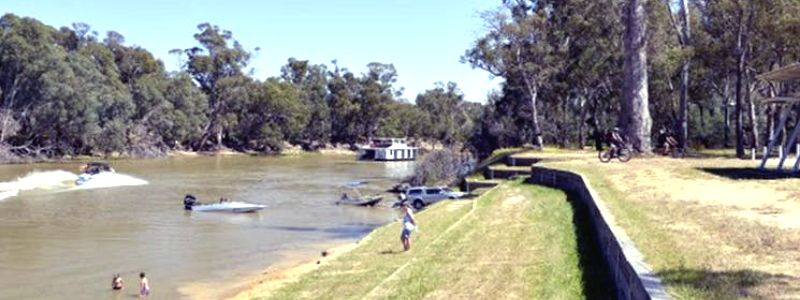
Picnic Point
Birdwatching Autumn in Mathoura marks the season when a myriad of bird species migrate
or make the town their temporary home. Hotspots include Picnic Point Road and the Reed Beds
Bird Hide Boardwalk to the hide, where you can look for yellow rosellas and superb wrens or watch
at the edge of the water for the purple swamp hen. The kids will love the audio visual displays.
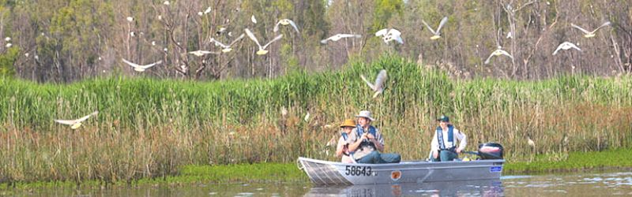
Birdwatching in the Wetlands
TOP
MAIN
HOME
PREV
NEXT
|